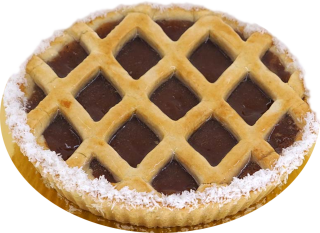

El secreto de una buena pastafrola esta en su masa crocante, esponjosa, amasada con las propias manos de nuestro maestro pastafrolero. 
La receta de pastafrola original consiste en una masa de tarta esponjosa, rellena con dulce de membrillo derretido y decorada con unas tiras de masa. Pero un día, a alguien se le ocurrió ponerle dulce de batata en vez de dulce de membrillo, y así comenzó la batalla que divide a las masas en la región: batata o membrillo.
Para los que no saben, la pastafrola o pasta frola es una delicia argentina (también la compartimos con Paraguay y Uruguay) ideal para la hora el mate o para la merienda. Y por qué no para el desayuno también? La verdad que es un golazo a cualquier hora.
Aca van los logos de Pedidos Ya, Rappi, Uber Eats, Glovo, Didi, etc